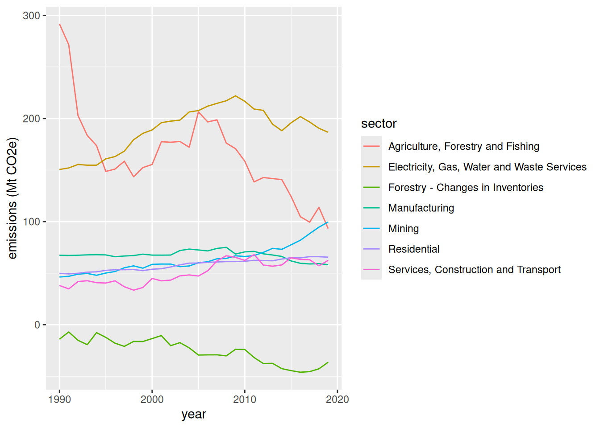

install.packages(c("tidyverse", "plotly", "htmltools"))R reproducible reports with Quarto
Setting up
If you don’t have R and RStudio installed already, we have installation instructions
- If you are using your own laptop please open RStudio
- Make sure you have a working Internet connection
- On the Library’s training computers:
- Log in with your UQ username and password
- Make sure you have a working Internet connection
- Open the ZENworks application
- Look for “RStudio”
- Double click on RStudio, which will install both R and RStudio
Recent versions of RStudio already include Quarto.
With RStudio open, let’s make sure we have the necessary packages installed by running this command (this might take a few minutes):
This will install the Tidyverse packages, the plotly package for interactive visualisations, and the htmltools package for having all bases covered for rendering HTML documents.
If R asks about installing a binary or building from source, pick the binary option: it will be faster!
What are we going to learn?
R is a great tool to go from importing to reporting. Today, we focus on the “reporting” part.
Using R, RStudio, the Markdown syntax and the Quarto publishing system, we can create reproducible reports that mix code and prose. If the underlying data changes, we only need to replace the original data file and “render” the report once more, which updates all its contents in one click.
Create a Quarto project
Use the project menu (top right) to create a “New project…”. Let’s select the project type “Quarto Project” and name this one “reports”.
This kind of project automatically creates a .qmd file for us, but if you have an existing R project and want to add a report to it, you can also create only that file with: “File > New File > Quarto Document…”. If you create a single file, you can use the dialog to choose the title of the report, and add the author. For a generic report, the HTML output is the most versatile and the one we use for this tutorial (and it is Quarto’s default anyway).
Quarto document structure and rendering
See how the document is already populated with a template? Scroll through and have a look at how it is structured. The three main elements are:
- a YAML header at the top, between the
---tags; - Markdown sections, where we can write prose, format text and add headings;
- and code chunks, in between
```where we can write R code.
But before we edit this document, let’s go straight to the “Render” button at the top of the source panel. Clicking that button will compile a document from the Quarto file. You should see the process unfolding in the “Background Jobs” tab, and the HTML document pop up in a separate window when it is finished.
See how the document contains a title, headers, code input and output, and formatted paragraphs?
A note on R Markdown
R Markdown was the predecessor to Quarto. If you have existing .Rmd files, you should be able to move them to Quarto with no or very minimal modification. That being said, R Markdown is here to stay and you can keep using it independently from Quarto.
Editing the document
Let’s remove everything below our YAML header, and start writing our own report!
Note that by default, the editor uses the “Visual” mode. We can change it to “Source” for now, using the editor toolbar, to familiarise ourselves with the syntax.
Markdown syntax
Markdown is a markup language that allows us to format text with simple tags, similarly to HTML or LaTeX.
To add a heading, we can start a line with ##: this will be a heading of level 2. The number of hash symbols corresponds to the level of the header.
We are going to deal with greenhouse gas emissions for Australia, so let’s add a header and some text about the source of the data and how to import it. For example:
## National Greenhouse Gas data
Our data is extracted from the _National Inventory by Economic Sector_ dataset, which is part of the _National Greenhouse Accounts_, and is released under a [CC-BY](https://creativecommons.org/licenses/by/4.0/) licence. The latest release can be found on [this page](https://www.dcceew.gov.au/climate-change/publications/national-greenhouse-accounts-2022/national-inventory-by-economic-sector-2022).
The values are reported in Mt CO<sub>2</sub>-e.Notice how we used a [text](link) syntax to add a link to a website?
Challenge 1
We can also style our text by surrounding with other tags:
**for bold*for italic
Try to style your text, and add a heading of level 3 for a section on “importing the data”. Render the document to see if it works!
R code chunks
We can now add a code chunk to include some R code inside our reproducible document. To add a code chunk, click the “Insert a new code chunk” button at the top of the source panel, and click “R”. You can see that the language of the code chunk is defined at the top, with {r} (but other languages, like Python, are also supported in Quarto).
```{r}
code_goes_here
```Let’s import the Tidyverse, by including this code in the chunk:
library(tidyverse)Notice that you can run your chunks of code one by one by clicking the green “play” button at the right of the chunk: you don’t have to render the whole document every time you want to test your code.
Now, try to render the document and see what it looks like.
Challenge 2
Inside a new chunk, add some code to import the dataset located here into an object called ghg.
ghg <- read_csv("https://raw.githubusercontent.com/uqlibrary/technology-training/master/R/reports/aus_ghg_2019.csv")Clicking “Render” will automatically save your
.qmdfile as well as the HTML output.
Now, we can add a chunk to show the data, by including this code in it:
ghgWorking directory
Note that the working directory for a Quarto document will be the .qmd file’s location by default (and not necessarily the working directory of the R project your are in). That is why it is a good idea to save your Quarto file at the top of your project directory if you want consistency between your scripts and your Quarto file.
In our example, we load a CSV file from the Internet, but if we had a data file stored locally, it is important to keep that in mind.
Chunk options
Notice how our two first chunks show some messages as an output? We might want to remove that if it is not important and we don’t want to include it in the report. At the top of your chunk, you can use code chunk options like so:
```{r}
#| option1: value
#| option2: value
code_goes_here
```For example, include this option to hide messages in the output:
#| message: falseThe code will be executed and the output (if there is any) will be shown, but the messages won’t!
There are various options to choose from, depending on what you want to do and show with your chunk of code. For example, to hide both messages and warnings, and only show the output of the code (without showing the underlying code), you can use these options, separated by commas:
#| message: false
#| warning: false
#| echo: falseIt also is a good idea to label your chunks, especially in longer documents, so you can spot issues more easily. It won’t be shown in the report, but will be used in the console and can be used to navigate your script (with the dropdown menu at the bottom of the source panel). For example, for our first chunk:
#| label: load-packages
#| message: falseThese labels also allow you to use cross-references when generating plots.
It is also possible to include options in the YAML header at the top of the document, to set default options you want to use for all you chunks. That is particularly useful if you want to define a default size for all your figures, for example.
Here is an example of “execute” options you might use in your YAML header:
---
title: "My Report"
execute:
echo: true
message: false
warning: false
---That would make sure that, by default:
- The code is shown, but
- the messages and warnings are hidden.
Errors when rendering
It should be straight forward to find where an issue comes from when rendering a report does not work.
Challenge 3
- Try changing a chunk code so the code is not valid.
- What can you see in the console? Which parts are helpful to identify the issue?
Tidy the data
Let’s keep populating our report with more code. Our data is not respecting the tidy data principles, so let’s fix that first with a tidyr function:
ghg_tidy <- pivot_longer(ghg,
-year,
names_to = "sector",
values_to = "emissions")Inline code
We can also include code that will be executed inside Markdown text. For example, you can write the following sentence:
The dataset contains GHG emissions for the period
`{r} min(ghg$year)`to`{r} max(ghg$year)`. The maximum GHG emissions recorded for the mining sector is`{r} round(max(ghg$Mining), 2)`Mt CO2-e.
Visualisation
We can also include a visualisation using, for example, ggplot2:
ggplot(ghg_tidy, aes(x = year, y = emissions, colour = sector)) +
geom_line() +
ylab("emissions (Mt CO2e)")
If you want to hide the code that created an output, like for this plot, you can add the option
#| echo: falseto it.
Finally, let’s create an interactive version of our plot:
library(plotly)
p <- ggplot(ghg_tidy, aes(x = year, y = emissions, colour = sector)) +
geom_line() +
ylab("emissions (Mt CO2e)")
ggplotly(p)This will work in a HTML document, but will most likely fail in other output formats.
If you want to change the size of your visualisations, you can tweak the width and height with chunk options like fig-width: 8. However, to make that consistent for all your figures, better use an extra default option in the YAML header. For example:
format:
html:
fig-width: 8
fig-height: 6Update the report
We have an updated version of the dataset. The only thing we need to do to update the whole report is point the data import code to the new file, at the top of our document, changing the year to “2022”:
ghg <- read_csv("https://raw.githubusercontent.com/uqlibrary/technology-training/master/R/reports/aus_ghg_2022.csv")Rendering again will update all the objects and visualisations for us! This is the power of reproducible reports in R.
With reproducible reports, you can potentially structure and write (most of) a report even before you have your research project’s final dataset. (Well, at least the data analysis part, maybe not so much the conclusions!)
Output formats
The benefits of using HTML documents are multiple:
- figures won’t break the flow of the document by jumping to the next page and leaving a large blank space;
- you can include interactive visualisations making use of the latest HTML features;
- they can be directly integrated into a website.
However, other output formats are available. Here are some examples for the format value in your YAML header:
pdffor a non-editable, widespread, portable formatdocxandodtto open and edit with Microsoft Word and LibreOffice Writergfmfor a Markdown file that can easily be published on GitHub or GitLabdashboardfor a card-based dashboard- and more, including for creating slides.
Rendering to PDF
In some cases, you might be required to share your report as a PDF. Rendering your document to PDF can generate very professional-looking reports, but it will require having extra software on your computer.
You can install the necessary LaTeX packages with an R package called TinyTeX, which is a great alternative to very big LaTeX distributions that can be several gigabytes-big.
In a terminal, run the following:
quarto install tinytexAfter this, try to change your YAML header’s format value to pdf and render it.
Useful links
Related to R Markdown and knitr:
We also have a general list of recommended R resources.